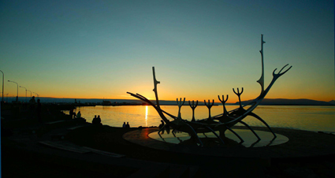

UNRAVELLING RUSSIA
It’s time for a trans-Siberian fling with that grand old dame Russia; a vast enigmatic land teeming with contradictions. Like a babushka doll, it’s all about peeling back the layers of history and preconception to find a country bursting with imagination and a special kind of energy all coiled up like a spring.
The country - more famously known for its mushroom-shaped palaces, billionaires, ballets and a penchant for vodka - is currently buzzing with creative-types as Mercedes Benz Fashion Week Russia kicks off (21 – 25 October) kicks off with the likes of designer Aleksandra Zaguzova showing the world what the contemporary Muscovites are up to.
But it’s not all about Moscow, just down the road in St. Petersburg, the cosmopolitan crowd are breathing a new bohemian life into the city’s baroque architecture and with the design-forward bunch at W Hotels pitching up its latest new opening in the city, W St. Petersburg - it’s putting this Tsar city firmly on the sartorialist’s map. Time to go east.
For more information about Russia and to book, visit www.blacktomato.co.uk or call on 020 7426 9888.
Posted by Rebecca Shay at Black Tomato 24/10/11
IN SEARCH OF NIRVANA
This year marks the 20th anniversary of Nirvana’s trailblazing Nevermind album. And with it comes a tangible nostalgia, not just for the album itself, but for the unquestionable grunge-soaked havoc it cast over the music industry and popular 90’s culture. Holey jeans and flannel shirts were the uniform of the era and Kurt Cobain was worshiped God-like effigy.
The Seattle-based band’s influence will never be forgotten. Their revolutionary sound set the rock ‘n’ roll industry on its ear and changed the music industry forever.
So be inspired to follow the music over to the Emerald City itself, where the rock and grunge scene of North America was born. Seattle is rich with cosmopolitan culture, its skyline pin pricked by the Space Needle synonymous with the city. It is also home to a buzzing live music scene having not only spawned Nirvana but the likes of Jimi Hendrix and Pearl Jam. Walk through the downtown streets and feel the palpable air of what once was, breathe it in, it smells like teen spirit.
For more information about Seattle and to book, visit www.blacktomato.co.uk or call on 020 7426 9888.
Posted by Lilee Cathcart at Black Tomato 17/10/11
LUNAR LANDINGS
NASA released staggering new images this week of our familiar Moon but in a crisper guise never before seen, old human footprints still imprinted on its alien-like surface in startling clarity. The images come just before the space agency launches another mission to the Moon, but whilst space exploration is to be saluted for all its great strides for mankind – let’s not forget those truly ethereal sights a little closer to home.
Meet La Luna Valley, Chile. The clue is in the name with this one. Carved out by wind and rain erosion, this strange lunar landscape is one of the driest places on Earth. Great arid lakes are sprinkled with salt creating a grey-white otherworldly surface. Like battle scars; pot holes pepper the land telling tales of meteoric collisions. Prepare for dreamlike desert days giving way to ‘out of this world’ nights as the land is bathed in subtle moon-glow. No need for a lunar capsule here, just a healthy dose of curiosity and a pair of fidgety feet.
For more information about Chile and to book, visit www.blacktomato.co.uk or call on 020 7426 9888.
Posted by Rebecca Shay at Black Tomato 22/08/11
CHASE THE SUN TO SANTORINI
With the muggy mercury rising in the Big Smoke this week causing downpours en mass and the public mood being one of disbelief that this may signal the very end of Great British Summertime once more, it can only mean one thing - time to chip off for a long weekend to sultry Santorini.
Put quite simply, Santorini is the chicest island in the Mediterranean – an old charmer it may be it should be experienced with a hip twist. September is the best time to catch the last ebbs of summer sun, smoking hot nightlife and achingly hip restaurants on this volcanic island strung out in the middle of the cobalt blue Aegean Sea.
In a league of its own for old school charm, watch the evening sun melt over the charred black cliffs casting soft pink light on the bleached-out villas that cling to the edge. And don’t forget to taste the incredible local Assyrtiko wine; Santorini has the oldest vines in Greece and a unique way of growing them – experienced best with a local master of wine.
For more information and to book, visit www.blacktomato.co.uk or call on 020 7426 9888.
Posted by Rebecca Shay at Black Tomato 15/08/11
MUSA - MEXICO ART WITH A TWIST
Thoughts of Mexico’s Cancun may make the mind wander to views of skyscraper-style resorts and hoards of spring breakers but lurking under the sea is something that could raise the eyebrow of even the most ardent cultural devotee.
Lying just off Mexico’s beautiful Caribbean coast, the ‘Museo Subacuaático de Arte’ is an underwater art space with a few twists. Aside from being under the sea which is obviously twist number one, the art on display is a collection of 400 permanent, life-size sculptures on the ocean floor created by a British artist, Jason de Caires Taylor. Each of the sculptures in ‘The Silent Evolution’ is specially designed to promote coral life meaning that not only do they attract colourful troupes of fish, but are also ever-changing as the fish and marine ecology change and alter the statues. An underwater eco-friendly art museum….must be Mexico. Dive in.
For more information about Mexico and to book, visit www.blacktomato.co.uk or call on 020 7426 9888.
Posted by Rebecca Shay at Black Tomato 08/08/11
REYKJAVIK - MUSIC TO THE EARS
Excitement is reaching fever pitch for the upcoming release of Bjork’s eighth album Biophilia, out in September. Ever the progressive, Bjork has spent the last two years crafting her interactive multi-media work; best described as a ‘constellation’ of apps encompassing music, internet, installations and live shows. As the Icelandic songstress kicks off a string of U.K. performances culminating in the headline spot at Bestival 2011, we take a creative pilgrimage across the waters to Reykjavik, the artistic hotbed that spawned the unconventional singer.
A pulsating music scene doesn’t come better than in Reykjavik. This is also the city where Sigur Ros’ ethereal electronica was born and of late, where frontman Jónsi has carved out his solo career – pushing the boundaries of electronic performance art. Jet in for a long August weekend when the sun regularly bathes the city in up to twenty hours of sunshine. Make like the nocturnal locals heading out late to sample the live music scene at Damon Alban’s bohemian bar, Kaffibarinn before moving onto the city’s biggest nightspot – NASA. Finish up watching the sun loop the earth before rising into the sky again for another massive twenty hour session.
For more information about Reykjavik and to book, visit www.blacktomato.co.uk or call on 020 7426 9888.
Posted by Rebecca Shay at Black Tomato 01/08/11

OWLING AROUND CATHEDRAL COVE
A new-fangled internet phenomenon was born this week and with it, a new phrase coined. The practice of ‘owling’ - a sequel to the ‘planking’ craze of 2010 - involves crouching like an owl in strange places and sharing a picture of your roost with friends. Notable spots for ‘owlers’ appear to be staircases, fridges, office tables and kitchen work surfaces but there is a whole world out there crying out to be perched upon. So step out of those four walls and settle a-top this beautiful jagged shard of rock jutting out of Cathedral Cove, New Zealand.
Cathedral Cove in New Zealand’s North Island is an area of dramatic cliff tops, sharp rock formations and outcrops carved by the crashing waves. Any serious ‘owler’ would be proud to call this home. The famous marine reserve, donated to the country by a rather generous Vaughan Harsant in 1971, has some spectacular scenery including a sea cave and the honeycomb cliff face of the bay.
Off-shore islands such as this provide protection for the beautiful bleached out beaches of Stingray Bay and Hot Water Beach. That’s right –believe it or not – the aforementioned sea creature is regularly seen lurking in Stingray Bay and Hot Water Beach is infact wonderfully warm.
But, for the very best view of Cathedral Cove, perch at one of the look-out points dotted along the cliff tops and enjoy the sweeping views of this splintered coastline.
For more information about Cathedral Cove, New Zealand and to book, visit www.blacktomato.co.uk or call on 020 7426 9888.
Posted by Rebecca Shay at Black Tomato 25/07/11
REMOTE RAKAHANGA
Introducing Rakahanga. Unlike the relatively populous Raratonga, Rakahanga is a lesser known and incredibly remote member of the Cook Islands that is begging to be discovered...and soon. As one of the most low-lying islands of the South Pacific, there are fears over how long this little place will be open to visitors so the time really is now.
Lying 42 kilometres south of sister island Manihiki, Rakahanga is encircled by stunning coral reef and shallow lagoons. Largely due to its inaccessibility, this little piece of bliss holds the elusive ‘hard to get’ crown of all the Cook Islands. But, it’s worth the boat ride.
Australian author and long-time inhabitant Julian Hillas summed up Rakahanga perfectly when he wrote “where today is forever and tomorrow never comes”. It truly is an otherworldly place of extreme remoteness that is hard for our western minds to fathom. Challenge the senses with a demanding but rewarding trip to this little drop in the ocean. On reaching Rakahanga – enjoy the warm welcome from the locals to any traveller that manages to step foot on its elusive shores. And here’s a tip - the local delicacy of coconut crab is a must.
For more information about Cook Islands and to book, visit www.blacktomato.co.uk or call on 020 7426 9888.
Posted by Marianne McPhee at Black Tomato 18/07/11
CAYMAN BRAC
The Cayman Islands aren’t just white sand beaches and palm trees (although there’s plenty of that). Unlike its two sisters, the third island of Cayman Brac is celebrated for its rocky bluff that runs right along the centre of the island. The limestone outcrop begins at the west end of the island and runs the 14 miles to the opposite end, growing to a 140ft tall at its eastern tip, making it a prime spot for climbers from all over the world but also superb for hiking, bird watching and spectacular views across the Caribbean Sea.
For divers and snorkelers, a sunken Russian destroyer now named Keith Tibbett’s Wreck is teeming with turtles, squid, lobsters and rays, as well as the occasional shark or dolphin. Brac’s craggy limestone outcrop holds a maze of alluring caves in its underbelly. Get in close quarters with the bats that call the caves their home... Even if bats aren’t your thing, the caves are rumoured to still contain pirate gold from the days that Cayman was used as a launching point for pirates to rob ships carrying cargo to and from the Caribbean and the New World. So keep an eye out for a glint of gold, or even a piece of Caymanite, a rare stone found only on the Cayman Islands.
For more information about Cayman Brac and to book, visit www.blacktomato.co.uk or call on 020 7426 9888.
Posted by Marianne McPhee at Black Tomato 11/07/11
THE MOUNTAINS OF THE SIERRA GORDA
The mountains of the Sierra Gorda, in Xilitla are where the poet and artist Sir Edward James sculpted his surrealist exotic garden.
Such was the power of Mexico’s rainforests that James succumbed to something of a prolific Romantic building spell; prompting him to construct towering surrealist sculptures among approximately 80 acres of cold natural waterfalls and moulded pools. Yep, Tijuana this isn’t. All of James’ follies, palaces, temples and pagodas, (there’s over 30 of them), are spread across boundless beds full of tropical plants, including the succinctly named ‘House on Three Floors Which Will in Fact Have Five or Four or Six’.
The vast panoramic views of the Sierra Madre Oriental Mountains surpasses any blank gallery space we’ve yet come across.
For more on our bespoke experiences and to book, visit www.blacktomato.co.uk or call 020 7426 9888
Posted by Marianne McPhee at Black Tomato 04/07/11
ESCAPE TO NEW YORK MUSIC FESTIVAL
Hitting US shores for the very first time from 4th to 7th August, Escape to New York is a music festival set to impress. With a line up including the best of international music from the likes of Patty Smith, Edward Sharpe and The Magnetic Zeros to Grafitti Six, there’s a music tent, tepee or patch of grass ready for anyone’s dancing shoes.
This pioneering musical extravaganza, put on by the ingenious gent behind the British Secret Garden Party (SGP), is taking place in the Hamptons (NY) for the very first time at the start of August. The SGP was a highlight of the past couple of summer’s festival seasons and now you can head over to New York to partake in a new highlight to the year’s musical calendar.
Head to the Shinnecock Reservation in the Hamptons - this is the very first time that any public event has been staged on the Reservation and by the looks of the amazing lineup, it is set to be a truly memorable
This event is set to be ground breaking and may well change the face of the US festival scene, make sure you don’t miss out.
For more on our bespoke experiences and to book, visit www.blacktomato.co.uk or call 020 7426 9888
Posted by Marianne McPhee at Black Tomato 27/06/11
ROME BUILT, FLORENCE BUILT WORLD
Founded by the great Julius Caesar in 59 BC and modeled after an army camp, Florence (then Florentia) was born for the Renaissance - an old warrior turned philosopher, one day returning to its roots to reshape the World according to its own marvelous mantra. MAKE ART NOT WAR rang the beautiful battle cry, the new generals bore palettes not shields; brushes were their broadswords.
The architectural influences of Rome and Florence have shaped the world’s great cities, but, though the cultural copycats are many, none have come close to matching the splendor of Italy’s Dolce Duo. We like to think of ourselves as the vanguard of a renaissance in travel, turning the world you know on its head like the great masters of old. This Spring, we’re bringing you back to Italy for an alternative take on this tale of two cities.
From after-hours access to the Vatican Museum and the Sistine Chapel, to the heart of the Tuscan countryside for a stay at one of Italy’s most exclusive hotels. Interested? Click here to find out more.
For more on our bespoke experiences and to book, visit www.blacktomato.co.uk or call 020 7426 9888
Posted by James Snowdon at Black Tomato 28/02/11
MIAMI MI AMORE : DELANO
Philippe Starck’s tantalizing brand of New Design has sent a gorgeous shiver through the status quo of what is expected from a boutique hotel.
What Starck has achieved at SoBe’s Delano is something else. A temple to warped minimalism, this gorgeous Art Deco mistress is the statuesque glamour puss of the South Beach brigade.
Under the southern sun, the gorgeous pool lounges like a liquid catwalk, the rooms an albino elegy. And with Master Chef Claude Troisgros at the helm in Delano’s Blue Door Fish restaurant, this looker packs a fair punch when it comes to fine-dining.
Starck has pulled off stark but sprinkled it with stardust.
The pièce de la resistance however has to be The Florida Room. The gleaming lovechild of Morgans Hotel Group and Kravitz Design (Lenny, to be precise) this schizophrenic space is homage to Miami’s goodtime girl ethic, and the ideal backdrop to the slow-shot Wong Kar-Wai epic that never was.
Here at Black Tomato we’re in the mood for love. And for Delano, we are unashamedly head over heels.
For more on our beach holidays and to book, visit www.blacktomato.co.uk or call 020 7426 9888
Posted by James Snowdon at Black Tomato 21/02/11
TROPICAL NORTH QUEENSLAND
Thankfully, the Tropical North of Queensland was spared the deluge during the recent flooding that swept through the region and continues to shine as bright as ever. This is the coast that spans Mackay to the tip of Cape York.
So, with disaster safely averted and paradise spared, read on.
For many, North Queensland is but a byword for the submarine splendour of the Great Barrier Reef. A pretty coral feather in the cap, but, truth be told, the majority of Australia’s North East remains unexplored. Here at Black Tomato, we’re lifting the lid on this region’s alternative icons. (This means beaches, steel lizards and tropical rainforests.)
Test your Midas touch in the Palmer Goldfields and head to Split Rock to catch the ancient Aboriginal Rock Art on these stony walls. From Mareeba’s Tropical Wetlands to the Robinson Crusoe dream of Haggerstone Island – we’ve crafted a series of mind-blowing experiences to turn your image of North Queensland on its (very photogenic) head.
Opposite - Norman River Floodplain, Karumba
For more on our Antipodean adventures and to book, visit www.blacktomato.co.uk or call 020 7426 9888
Posted by James Snowdon at Black Tomato 29/11/10
UNIQLO X BLACK TOMATO
Yes, it’s cold here in London right now. But it’s boring to rant on about being chilly. We’re all chilly. Some of us, however, are less cold than others because we’re wearing HeatTech: that’s the strand of the Japanese super brand UNIQLO that everybody seems to be fond of.
UNIQLO’s style is unmistakable. Functional, minimal and playful; the high-tech ministry of warmth that keeps the high-street snug will now be embarking on its very own mini-series of very exciting all-terrain winter adventures with us here at Black Tomato.
Inspired by UNIQLO’s scientifically-advanced warming winter styles we’ve pulled together four of our favourite unique winter trips that kiss goodbye to the stress of packing for the elements…
Introducing the Black Tomato way to enjoy the benefits of the big freeze (without feeling the chill) with tailor-made trips to the world’s greatest snow-scapes of Iceland, Norway, Canada and Japan.
For more information on Black Tomato’s wintery destinations visit www.blacktomato.co.uk or call +44 0207 426 9888
Posted by Julia Hobbs at Black Tomato 22/11/10
TO THE LIGHTHOUSE, NEIST POINT
With icy blizzards currently coating the majority of the UK’s upper echelons in a hazardous layer of thick white snow, it would be cruel to advise anyone to brave the journey to the northern most reaches of our green and pleasant land right at this particular moment in time. But. Instead we’re looking towards spring. To sandy beaches no longer whipped by winter’s burly winds, where palm trees sway gently against wrap-around blue skies. Scottish skies. All is private, calm and still, and emerging to be exceedingly fashionable.
In springtime, before the primping of summer begins we like to drift to lesser-known enclaves that conceal great portions of tranquillity for reassurance that, amidst our fast-changing world, there is elemental continuity. This is Scotland’s Isle of Skye, where the Talisker Distillery pours out warming flasks of flowing chestnut gold and savage beauty reign supreme. And all is but a train ride away from London...
For more information on our unusual holidays or inspiration on where to visit in 2011, visit us online or call on 020 7426 9888.
Posted by Julia Hobbs at Black Tomato 15/11/10
MALAYSIA
Living is easy with eyes closed. But it isn’t really that fun.
With the recent release of the Beatles’ entire back-catalogue on iTunes, our eye for unusual destinations drifted somewhat towards the psychedelic (Sgt. Peppers was arguably the best album?)
In our hunt for cellophane flowers of yellow and green to tower over our heads, we landed in Malaysia. The Belum jungle to be precise. Where one of the world’s largest flowers, the giant, rubbery (seemingly very fake, but 100% pure petal) Rafflesia grows.
Incidentally, Malaysia is also home to endless Strawberry Fields. Up in the Cameron Highlands the weather is a little more temperate than the tropical heat that slow bakes Malaysia’s flawless sun-bleached coastline. Which means from these cooler climes you can witness an impressionist’s vista of lipstick-red dots that do appear to go on Forever.
For more information on Malaysia, or for inspiration to travel to any one of our hand-plucked unusual holidays visit us online or call on 020 7426 9888.
Posted by Julia Hobbs at Black Tomato 08/11/10
GOING, GOING, BACK, BACK TO CALI, CALI
It’s been a hectic month in the world of American politics. To soothe the sweating brows of frustrated Senators we have devised our new guide to the dressed-down destination, California.
Yup, loosen your ties, we’ve given the Golden State a spit and shine with our latest Under The Skin project. It’s been a while since we started unravelling the little nooks and crannies of this spacious state, so we thought it was about time we unveiled our inside guide on the more unusual aspects of all-smiling Cali.
Drop anchor at your chosen parking spot along 365 miles of untouched shoreline of Lake Shasta for a private party with a difference – you’ve got a whole house boat to play with.
Or, for the (better) way to do Napa, experience a wine renaissance in Sonoma.
Finally, our tip for the ultimate dose of laissez-faire vibe: California’s emerging arts hub, San Diego. Loll about in La Jolla’s new wave of swinging bars and you won’t want to go home.
Want to find out more? We’ll fix it up.
For more information on Black Tomato’s unusual holidays to California visit us online or call on 020 7426 9888.
Posted by Julia Hobbs at Black Tomato 01/11/10

BLUE & MOROCCO
A deeper shade of blue?
Yves saint Laurent was so enamoured by the blue tinted Moroccan retreat of French painter Jacques Majorelle that he had to have it.
We know the feeling.
Recently we slid under the skin of Morocco to the lesser known town of Chefchaouen in the calmer Northern wilds of the Western Kingdom, a city where a chalky wash of Klein International Blue powders endless sloping stone passageways.
In the air between the jagged escarpment of the Rif Mountains and these spotless dreamlike streets hangs the memorable scent of Aragon oils.
Take a deep breath and go into the blue.
For more information on Black Tomato’s alternative experiences in Morocco visit us online or call on 020 7426 9888.
Posted by Julia Hobbs at Black Tomato 25/10/10
MAN VS BEAST
When you’re caught in the hum of city life it’s easy to forget that there are wild expanses of the earth that are just inhabited by animals. Just animals. And nothing else (well, nothing much). That’s quite a comforting thought when you’re dealing with some of the greyer aspects of urban dwelling.
Here’s our favourite luxe safaris ideas to bring you back to life, wildly:
The African Queen of safari lodges: Catch the Big 5 at the Singita Sweni Lodge, Kruger National Park, South Africa
The barefoot experience: Go walkabout on Africa’s grassy plains on a walking safari, Tena Tena Camp, Zambia
The remote option: A gorilla safari is more like people watching, get acquainted at the Apoka Lodge, Uganda
The jungle than inspired Kipling: Cat lovers can observe their favourite striped predators in the wild on a tiger safari in the Kanha National Park, Rajasthan, India
Meet hippopotamus amphibious: On land as in water...experience adaptation an aqua-safari at the Mvuu Wilderness Resort, Lake Malawi
To find out more about luxe safaris visit www.blacktomato.co.uk or call on 020 7426 9888.
Posted by Julia Hobbs at Black Tomato 18/10/10
DUNHILL X BLACK TOMATO
It would be hard to pick up an old well-worn travel journal without feeling drawn to its stories and scrawled descriptions of places that no longer exist in the same way today. There’s something within the intimacy of the writing that triggers the compulsion to abandon everything and follow its path.
...which is pretty much what we did. Dunhill gave us exclusive access to the leather-bound journal recording the 1930’s expedition by their luxury goods expert Clement Court from Paris to Kyoto via Moscow and the steppes of Mongolia. We hadn’t seen anything quite like it.
Inspired by excerpts of Court’s book we set about re-interpreting his epic overland voyage as a series of unique, bespoke experiences...
Take tea in the wings of the Bolshoi Theatre in Russia, wander the Louvre long after closing-time, hunt on horseback with eagles on Mongolia’s wild plains or complete Court’s journey from start to finish on the Trans-Siberian Railway.
Here at Black Tomato, we believe the luxury of travel lies in discovery, and that is timeless. To find out more about our modern adventures inspired by the doyen of luxury apparel visit www.blacktomato.co.uk or call on 020 7426 9888.
Posted by Julia Hobbs at Black Tomato 11/10/10
BE THE FIRST IN BHUTAN
It’s a bit rare to find something totally unique these days…‘off the beaten track’ is more likely to be the first exit from an a-road; a ‘hidden gem’ ends up being a bar that had its best days twenty years ago. Fortunately, there are still places in the world that really are one-offs. You’ve probably heard of Bhutan, but maybe you don’t know all its secrets. It’s only been open to tourists since 1974 and is still pretty unscathed. Bhutan still adheres to a daily dress code, worships the penis to ward off evil and places Gross National Happiness far above Gross National Product.
Remember when you didn’t have a phone attached to the palm of your hand? Welcome back to the good old days. Whether you’re into trekking or looking for something a little more laidback, Bhutan’s Himalayan paradise offers an authentic escape from everyday life.
Hike western Bhutan’s turquoise glacial rivers, lush valleys and winding roads lined by peach orchards, willow trees and fertile rice paddies. Journey to the breathtaking Mt. Chomolhari (Bhutan’s snow-capped Tibetan frontier), where the Taktsang Monastery (the Tiger’s Nest) clings to a sheer cliff, 3,000 feet above the Paro valley.
Bhutan is best known for its mountainous terrain, but this isolated Himalayan Kingdom is perfect for a spiritual break. For photography, ecological wonders (ever seen the mysterious red panda?), or yoga under the stars, there’s no doubt that Bhutan serves it all up in a feast for the soul.
Move to Mongar in the east and the terrain drops from 3,800 metres to 650, taking you from Alpine cool to sub-tropical bliss. Take in Trashigang to meet the Sakteng people who are known for their clothing made out of yak hair and hats with five fringes. Stop to chat and you’ll hear their numerous tales of the infamous Yeti, (who, apparently, is a well-known local).
Bhutan is about freedom from the norm. Discover it while it’s still that way.
For more information and to book, visit www.blacktomato.co.uk or call on 020 7426 9888.
Posted by Julia Hobbs at Black Tomato 04/10/10
FASHION FUEL
With fresh inspiration from the big names in fashion, here at Black Tomato we’ve been musing the places in the world that hold the time-honoured secrets of our shared costume heritage...Those (often rather illusive) places where you can not only re-invigorate your wardrobe but also encounter an entirely different cultural tradition and way of life from our own.
We’re looking forward to skipping across the continents to broaden our style horizons...
Wonder the streets of Tokyo to photograph its charismatic trendsetters and predict the next fashion movement, or feel the original quality of rare Alashanzuoqi white cashmere direct from the four-legged manufacturer’s grazing spot in Mongolia’s Alashan Terrace.
Let authentic fashion from around the globe enhance your travel and your world.
For more information about our very latest world fashion destinations and to book, visit www.blacktomato.co.uk or call on 020 7426 9888.
Posted by Julia Hobbs at Black Tomato 27/09/10
A VINTAGE AFFAIR
Before there was Gaga’s knicker flashing exploits to get the tabloids in a frenzy, there was Ms. Jean Harlow and her breezy attitude to undergarments, and Lilyan Tashman’s raucous A-list parties...In homage to the leading ladies of early celluloid success, who knew how to kick start a scandal with a little elegance, we’ve been having a think about how to add a hint of old school glamour to modern Hollywood. LA is of course still a byword for decadence, but we wanted to turn the clock back.
And that’s why we came up with our Vintage Hollywood experience. Utter the words Chateau Marmont, quietly, and you’ll invoke the spirits of bygone movie stars of the 1930’s. The secretive garden bungalows of this actor’s residence are well known as the location du jour for Hollywood’s inner circle of first generation studio fodder to let off a little steam. Return to the Chateau Marmont and toast to a new era of insouciance...
Opposite - Lounge at Chateau Marmont
For more information and to book, visit www.blacktomato.co.uk or call on 020 7426 9888.
Posted by Julia Hobbs at Black Tomato 20/09/10
GET OFF THE GRID
It’s not very often that you can truly say you’re off the grid.
In homage to film character Shirley Valentine, our favourite runaway wife with a penchant for chatting to rocks, we’ve been scouring the world for places that lift you out of the monotony of everyday life.
Getting off the grid may not be that easy these days, so here’s our definitive top 10 places to disappear to where you can finally hear yourself think:
1.The Atacama Desert, Chile
2.Diving between tectonic plates, Iceland
3.Tari Valley, Papua New Guinea
4.The Kingdom of Bhutan
5.The Gobi Desert, Mongolia
6.The Skeleton Coast, Namibia
7.Pansy Island, Mozambique
8.Nicoya Peninsula, Costa Rica
9.Damascus, Syria
10.Devil’s Island, French Guiana
Here’s to being out of the loop... For more details and to book, visit www.blacktomato.co.uk or call on 020 7426 9888.
Posted by Julia Hobbs at Black Tomato 13/09/10
THE LAND OF PLENTY
Autumn has traditionally always been a time for harvest and feasting. Our favourite destination to honour the changing of the seasons would have to be somewhere you could witness a full colour explosion as the leaves turn. For us, the fall in Québec is second to none: huge swathes of forest shed their leaves and in the amber autumnal light the tranquil lakes glisten just that little bit more.
Down tools and escape to Québec to mark a year of hard work with a feast of home-grown delights. For starters, sample the apple cider. Québec’s first settler literally planted the seed for the province’s love affair with all things apple related on the site of what is now the hub of Canadian contemporary culture, Québec City, and they haven’t looked back since. By October the apples have ripened and are ready to be pressed: cue mellow evenings enjoying the fruits of the springtime’s labour. For something even more refreshing, hold out till January to swig the regional ice cider: the apples are left to freeze naturally resulting in a drink that is 100% pure. Prefer your apples non-alcoholic? Try a steaming apple and maple syrup tart freshly baked at one of the pâtisseries in Montréal’s Mile End neighbourhood and you’ll be converted.
Québec is also famous for its farmhouse and artisan cheeses, uniquely combining French and English cheese making practices to perfect the semi-firm surface-ripened cheese. The Quebecoise take their fromage very seriously indeed, hosting the prestigious annual La Fète des Fromages d'ici in Montréal. (This year’s event saw sixteen Québec cheese masters showcasing over 40 of their expert Quebec cheeses for public and panel scrutiny). Our local favourite has to be the famous Pied-De-Vent.
And what could go better with a slab of creamy blue than a glass of local wine? In the last 20 years Québec’s small but perfectly formed wine industry has emerged as a strong contender on the world wine map, with many vineyards family run for that personal touch. Pitch up for something straight from the cellar.
Cultivate your appetite in Québec this autumn. For more information and to book, visit www.blacktomato.co.uk or call on 020 7426 9888.
Posted by Julia Hobbs at Black Tomato 06/09/10
SKIES ON FIRE
If you don’t think there’s much to celebrate about the approach of winter, time to change your thinking. If there’s one place to make the most of the evenings drawing in, it’s Iceland.
Reykjavik is a city break with a big difference. Not many capital cities can boast bubbling thermal pools and dramatic frozen glaciers, plus this is just the tip of the, well, iceberg…
Around now, a little after dark, you can catch the wonder of nature in the Aurora Borealis. Adoringly named after the ancient goddess of dawn and the Greek word for the north wind, these sweeping swathes of neon coloured light will leave you mesmerised. For a front-row seat, hike the rugged landscapes of Thingvellir National Park, where the legendary ultra-violet sunsets are so extraordinary you’ll start to wonder what planet you’re on.
The city is full of creative innovation; it’s hard to ignore. By day, explore contemporary art galleries and rummage around in hidden boutiques for the niche brands that keep the locals looking so stylish. When the sun goes down, the Icelanders are experts in cutting edge nightlife, and staying at the chic Hotel 101 you’re perfectly placed to explore this city’s edgy after-dark spots.
To clear out that morning-after-the-night-before feeling a dip in the blue lagoon is definitely called for. Or, if you’re feeling a little more adventurous, quad bike across lunar landscapes, scuba dive between tectonic plates, or head into the wild on a snowmobile.
Make the most of autumn evenings, and experience a chic weekend away in Iceland.
For more information about Iceland and to book, visit www.blacktomato.co.uk or call on 020 7426 9888.
Posted by Marianne McPhee at Black Tomato 30/08/10
SAIL AWAY, SAIL AWAY, SAIL AWAY
The Owl and the Pussycat went to sea in a beautiful pea green boat... OK, so a year and a day might be a little too long, but wouldn’t we all very much like to sail away and dance by the light of the moon (the moon, the moon)?
In these dog days of summer we've been inspired by all things oceanic. And to be honest we’re a bit spoilt for choice…
To take a front row seat for some wondrous whale watching head to California’s west coast. Right now until October you can catch a glimpse of graceful blue whales and lumpy humpbacks off the Big Sur coast from the comfort of your schooner. They’re big. (These blubbery giants are the largest animals inhabiting the earth). Their hearts alone are about the size of a VW Beetle. Make your own beat faster as you experience one of the most amazing sites nature has to offer.
A little closer to home there’s the (often overlooked) volcanic island Lanzarote. Banish images of rows of beer-label parasols, this black sand beauty boasts top notch diving and from the deck of your private yacht you can feast your eyes on some seriously sci-fi landscapes.
What’s the best bit about sailing? We reckon it’s probably the freedom to throw down your anchor in a secluded bay and bathe in crystal clear waters as though they were a private infinity pool. Croatia's coastline has this covered. Dip into the secluded bays of the Pakleni islands to discover hidden restaurants serving seafood so fresh that it’s still blinking.
Phew... For the sailors that don’t want to break a sweat there are the Keralan backwaters. Pootle past farmers plucking rice from paddy fields as you gaze at the ebb and flow of local life from the slow lane on your own little house boat. All aboard…
For more information and to book, visit www.blacktomato.co.uk or call on 020 7426 9888.
Posted by Marianne McPhee at Black Tomato 23/08/10
SWEDEN'S SILVER ISLANDS
Once in a land not so far away, the sea was silver with herring. That’s according to the locals you’ll meet on the western islands of Sweden. There was once, apparently, a time when you could dip buckets into the water and they’d come up brimming with the country’s national dish. The fish have come and gone from Sweden’s west coast, but now they’re back (in slightly less legendary amounts) they make for a great dish and another reason to head this way.
There are literally hundreds of islands to pick from in the west, each with their own twist. Want to feel like you’re on your very own island? Pater Noster is small enough to throw a stone over (almost) and you can enjoy a glass of bubbly in an iconic 19th century red iron lighthouse to accompany the 360 degree views. Back down for a spin in the outdoor hot tub tops off a pretty perfect day.
If you’re searching for where the locals go, you’ll find them on Marstrand. Sweden’s summer escape. Walk passed the red-roofed houses and overflowing flower gardens – you’ve probably seen them on a postcard – to get to local cafés and boutiques. Classic seaside town? Check.
A hop over to Åstol Island, and you’ll know the names of half the residents after a few days (or hours; how outgoing are you feeling?). Don a cosy rug around your shoulders and take in some fresh sea air as Pia, Leif and their staff bring you smoked herring from their very own smokery. With a population under 300, they know every face. You’ll feel like a regular in no time.
Traditional Swedish schnapps, floating hotels and a private night in a floating sauna…yes please. At Salt & Sill hotel and restaurant, try a taster herring dish with a different flavoured schnapps to match each way the fish is cooked, and on your last night, take the floating sauna for a spin. You’ll be out at sea for a night of steaming away, bubbles on the balcony and sleeping to the sound of nothing but the local seals.
Whether it’s peace and quiet, a chilled community or a bustling local hotspot, our secret (until now) place to head is West Sweden’s islands. All the authentic, rustic charm you could want and none of the tourist hoards. Yet.
For more information about Sweden and to book, visit www.blacktomato.co.uk or call on 020 7426 9888.
Posted by Marianne McPhee at Black Tomato 16/08/10
A CLASH OF OLD AND NEW
A heady mix of devastatingly beautiful landscapes, intriguing culture and sizzling hot cities. Yep – China is the destination when it comes to immersing yourself in the best of the old and new. Take an insiders tour from Hong Kong to Guilin for the ultimate Ying and Yang travel experience.
Begin in the urban playground of Hong Kong for a true taste of 21st century China. Hop over on the ferry to the downtown districts of Kwai Fong, Soho and Gough Street for quirky designer clothes, Chinese antiques and vibey al fresco dining.
After the hustle bustle and frenetic pace of the city, the mist-draped mountains, bamboo forests and ancient indigenous villages of Guilin await. An old Chinese saying even claims this scenery to be the “finest under heaven”. And we certainly don’t disagree.
Go the water way and meander along the Li River to Yangshuo or if your feeling slightly more intrepid head deep into the countryside for a stunning stay at the Li-An Lodge. This gorgeously ornate wooden structure, perched on the mountaintop of the ‘Dragon’s Backbone’, is the perfect place from which to spend your days exploring endless rice paddies and meeting the ethic people of the Zhuang and Yao minority tribes.
The perfect Asian adventure for the best of both worlds? Definitely.
For more information about China and to book, have a look at www.blacktomato.co.uk or call on 020 7426 9888.
Posted by John Graham at Black Tomato 22/03/10
TEL AVIV CITY BREAK
Looking for an alternative city break to defy all pre-conceptions? Israel never sprung to mind? Well, trust us; it should definitely be at the forefront of your mind when planning your next cultural excursion. Rich atmosphere, heady beachlife, bustling shopping streets, markets, and hip bohemian neighbourhoods make Tel Aviv a multi-layered city with something for everyone.
From the designer shops of Shenkin Street, rich in cafés serving traditional coffee to linger over, to the boho Yemenite Quarter and the fortified port of Jaffa, the diversity here is unmissable. If shopping is on your to-do list but designer price tags aren’t, don’t miss Carmel Market: narrow avenues of stalls selling everything from fresh fruit to exotic spices and clothes.
For those art-lovers amongst you, spend a day immersing yourself in local galleries. Head to Gordon Street, the original hub of Tel Aviv galleries and the perfect spot for some serious art gazing.
In need of escaping the urban jungle? Stroll along the seafront from the shiny new marina and across the sandy beaches which stretch all the way from north to south and head for the historic port town of Jaffa (yes, where the oranges come from), where sun-bleached castles and turreted doorways greet you beside fabulous sea views.
Cutting-edge culture in the Mediterranean ‘city that never sleeps’. Get in quick, before the rest of the travel rabble catches on.
For more information and to book, visit www.blacktomato.co.uk or call on 020 7426 9888.
Posted by John Graham at Black Tomato 15/03/10
BEYOND A TO B
We’ve been taking ourselves off on a literary voyage in the last few months with the help of our project Travel Fuel. And for all the wise words we’ve read the quote “A journey is like marriage. The certain way to be wrong is to think you control it” from a certain Mr Steinbeck got us thinking about how we love the unexpected surprises that come with taking a ‘journey’.
So, here’s a few of our favourite alternative ‘journeys’ all to be experienced in a short getaway. Each of which bring a fresh perspective and are perfect to let you explore the wonders that lie nestled between A and B.
To Stelvio and beyond
Take Europe’s ultimate driving route, hop behind the wheel of your Ferrari (or Aston or Porsche) and burn some luxury rubber exploring the near perfect twists and turns of the Swiss and Italian Alps. Certainly not your average car journey.
Dijon: luxury wine tasting with a twist
France’s idyllic canals, a barge (no ordinary tug boat) and as much fine wine as you can handle. Meander from the Valley of the Ouche and moor up in the Cote d’Or. Sip vino in historic chateaux and discover fairytale towns along the way. Bliss.
See Venice from above and below
Want to get under the skin of Venice like no one else? Here’s a tip. Try exploring the canals by Kayak. Paddle around the city's epic islands and stunning architecture for a totally new perspective. The perfect alternative Venetian journey? Definitely.
Visit Black Tomato or call on 020 7426 9888.
Posted by John Graham at Black Tomato 08/03/10
MEDITERRANEAN GEMS
So, the spring it nearly upon us (though you’d never guess it with weather we’ve got going on at the moment) and it’s given us reason to get just a little bit exited. Why? One word: Europe. That’s right, not long now until our favourite hip Mediterranean hangouts and European classics (with that Black Tomato twist, naturally) hot up for you to experience a stunning summer escape across the pond.
And the best part? Well, let’s just say we have more than a few secrets and insider tips to share with you so that you can experience these Mediterranean gems like a true local.
Read on for our pick of the bunch.
Milan to Potofino
Shopping or beach? Hmm…Why not combine the two? Sharpen your shopping skills in the fashion capital before cruising the rolling Italian countryside (in a Ferrari if you wish) to the old-school Riviera charm of Portofino. Magnifico.
Culture and coast, Turkey
From intriguing culture within the crumbling city walls to the most up-and-coming beach spots and chic properties in the business. Turkey is home to Europe’s cutting-edge cool and an authentic experience to snap up without delay.
Chic seduction in Santorini
A picture perfect, volcanic island dropped in the stunning blue waters of the Aegean. Looking for traditional Greek charm with a hip twist? This is it. Stay in our favourite sugar-cubed hideaway and get under the skin of this outrageously chic island.
Visit Black Tomato or call on 020 7426 9888.
Posted by John Graham at Black Tomato 01/03/10
SAFARI IN BOTSWANA
From the Kalahari Desert to the Okavango Delta.
A short clip from our recent trip we took to Botswana.
Posted by John Graham at Black Tomato 22/02/10
Visit Black Tomato or call on 020 7426 9888.
TOP TEN SOUNDS TO WAKE UP TO
The alarm beeps and then comes the heavy sigh as you push the sleep from your eyes and climb out of bed to the sinking feeling of another day in the office.
Not the best sounds to start the day and if you ask us, there are far better sounds around the world to wake you from your slumber.
Here are our top 10 wake up calls from around the world. Engaging, exciting and each the perfect alarm call to fuel your anticipation of what great experiences lie ahead in these truly amazing destinations.
1.Rickshaw wallahs gearing up in Mumbai
2.Surfacing whales on the valdes peninsula
3.Deafening sound of silence in antarctica
4.Prayer wheels and laughter in bhutan
5.Buzzing cicadas in sabi sands
6.Lapping water in tropical panama
7.Clanging of church bells in colonial granada
8.Clearing of the heavens in borneo
9.Hypnotic calls to prayer on java
10.Purring boats pulling up in panarea
Be inspired visit our Top ten sounds to wake up to or call on 020 7426 9888.
Posted by John Graham at Black Tomato 15/02/10
BE INSPIRED IN ARGENTINA
Laid back, capital of cool Buenos Aires is definitely up in the top cities when in need of a sweet caffeine hit.
A café culture to rival any city in the world (its Spanish and Italian roots might have something to do with it) Buenos Aires is king when it comes to kicking back and taking time to talk with friends over a café chicos. Our tip? Head for the Palermo Viejo Cafe in the trendy streets of Palermo where the concept of grab-and-go, coffee from a paper cup is nowhere to be seen.
Feel the tango beats and serious flavour on our be inspired in Argentina experience or call on 020 7426 9888.
Posted by John Graham at Black Tomato 08/02/10
THE INSIDE TRACK FROM DOING THE OUTBACK IN STYLE
We all know Australia is renowned for its treasure trove of gastronomic delights, and in the culture capital, Melbourne, it’s all about the java.
With a brewing tradition brought over with the influx of both Italian and Greek populations, Melbourne’s Coffee culture has now evolved into something of a force in its own right. Our favourite? Wall Two 80 in Balaclava (the hole in the wall to the locals) serve’s up some of the best coffee in town or head for Brunswick street in the suburbs of Fitzroy where independent cafes rule the roost and you won’t find a single Starbucks in sight.
Have a look here for more inspiration to head down under or call on 020 7426 9888.
Posted by John Graham at Black Tomato 01/02/10
SNOW OR SAND IN REJUVINATED BEIRUT
Beirut’s reputation as the Paris of the Middle East has been making a sprightly comeback of late. And of course, with that comes an amazing place for sipping coffee on the streets and watching the world go by. With a tradition of great hospitality, Lebanese coffee - made in a rakweh - is distinctly thick, strong and sometimes lightly flavoured.
For a top notch mid-morning kick head for Cafe Rawda by the Seaside Manara but be warned, if you’ve not got a sweet tooth remember to mention when ordering - the Lebanese certainly like more than a little sugar in their brew.
See more of Beirut on our snow or sand in rejuvenated Beirut experience or call on 020 7426 9888.
Posted by John Graham at Black Tomato 25/01/10
SIGIRIYA - A DRAMATIC WONDER OF SRI LANKA
If you’re on the lookout for a really dramatic place to take your next holiday, we recommend that you consider Sri Lanka.
This is the home of Sigiriya (Lion’s Rock), the ruins of a once opulent palace and fortress and it truly is one of the most awe-inspiring places on earth.
We were enthralled by its maze of gardens and reservoirs and were left marvelling at the skills of the people who built them in the fifth century - we wouldn’t be able to manage masterpieces like that no matter how many diggers and mowers we hired.
At the foot of the giant piece of magma, there is also the carved stone remains of a lion’s paw which you can pose for photographs next to. It’s so realistic, you’ll be as convinced as us that it’s going to reach out for you.
Sigiriya is one of Sri Lanka’s seven World Heritage Sites and definitely forms part of our own wonders of the world list.
Check it out from a luxurious base in the form of our Vil Uyana Sri Lanka hotel and feel like a king or queen as you survey the paddy fields and forests below.
For more information about Sri Lanka and to book, have a look at www.blacktomato.co.uk or call on 020 7426 9888.
Posted by John Graham at Black Tomato 18/01/10
ENJOY A WORLD FROM A DREAM IN NAMIBIA
If you’ve never been, this African country is like something out of a dream. It is one of the most wild, hauntingly beautiful places we have ever had the pleasure of visiting and we’d recommend it to anyone looking for a trip to remember.
We created a travel experience for the Skeleton Coast after coming back from the national park and it should come with a recommendation that it’s one of those places you just have to see for yourself.
It’s so called because over 1,000 ships have met a sticky end there and the wrecks are still visible from the shores, but don’t think it’s a miserable, dead place.
In fact, there are some great animals like seals and elephants which you can see as you go on safari around the coastal area, as well as some fantastic geological formations like the Agate Mountain and the clay castles of the Hoarisib.
Words just don’t do this destination justice - book a trip to Namibia with us instead and we’re sure you’ll find it to be like a dream you don’t want to wake up from.
For more information about Namibia and to book, have a look at www.blacktomato.co.uk or call on 020 7426 9888.
Posted by John Graham at Black Tomato 11/01/10
A WILDLIFE ADVENTURE, BRAZIL
Animal lovers who also like travelling the world may have already seen the Amazon, one of the most beautiful and awe-inspiring natural wonders in the world.
However, they may be less likely to have seen the Pantanal, which is a vast tropical wetland area in south Brazil. It is so huge that it even stretches into Paraguay and Bolivia and is 20 times the size of Florida’s famous Everglades.
Pantanal is also one of Brazil’s best kept secrets, which is great when it comes to travelling there to spot wildlife.
With 1,000 species of bird, 300 types of mammal and 480 species of reptiles there, you are likely to find that it’s not hard to spot plenty of fauna on your break there.
For a varied trip to Brazil, we’d suggest visiting the Iguassu Falls before heading to Pantanal and then continuing up to the fantastic city of Salvador, a travel experience we can cater for on our Safari Adventure in Brazil.
However, it’s your holiday, so if you have something else in mind, feel free to give us a call and we can sort it out for you.
For more information about Brazil and to book, have a look at www.blacktomato.co.uk or call on 020 7426 9888.
Posted by John Graham at Black Tomato 04/01/10
TRY A SAFARI WITH A DIFFERENCE IN ALASKA
If staying on a tropical island isn’t your thing, or you don’t fancy a city break, then why not head to somewhere cold and have the adventure of a lifetime?
We’re not talking about northern France or Italy; we’d rather take you to somewhere completely unforgettable, so that’s why we put together a travel experience in Alaska The largest US state, Alaska is virtually a complete frozen wilderness and makes the perfect place to skim over in a snowmobile.
Our Snowmobile Safari is based in Anchorage, a great location where you can eat out and catch a show at the theatre in the evenings.
The Snow Cafe is one of our favourite eateries - sample one of their breakfasts and it’ll probably become yours too.
However, during the day, you can put action heroes like Bruce Willis and Sylvester Stallone to shame as you zoom from place to place on your snowmobile, complete with a guide to point out the best sights.
For complete adrenaline junkies, we can also organise ice-climbing, bear tracking and heli-skiing.
For more information about Alaska and to book, have a look at www.blacktomato.co.uk or call on 020 7426 9888.
Posted by John Graham at Black Tomato 28/12/09
INDIA – IT’S THE PERFECT PLACE TO HAVE AN ADVENTURE
Anyone whose experience of India has been limited to traditional destinations like Goa may not know that it is one of the best destinations in the world in which to have an adventure.
There are dozens of holiday ads for India at this time of year which may make you think that all there is to do is lounge by the pool or on the beach.
However, here at Black Tomato, we beg to differ. Granted, you can enjoy a great relaxing holiday in this wonderful country, but you can also have the time of your life if you’re an adrenaline junkie too.
We headed to India to find out where the best places are to enjoy the experience of a lifetime - we’re always on the lookout for new ideas to save you the job - and we found so many that we built a whole trip around them.
Fancy zooming along a zipline over Rajasthan? Or travelling along deserted Himalayan roads on a motorbike? And how about enjoying elephant and hot air balloon rides, all on the same trip?
No problem. Take a look at our India + Extreme Thrills Experience and see what you think, then give us a ring and we can tell you how exhilerated we were after going on that zipline.
For more information about India and to book, have a look at www.blacktomato.co.uk or call on 020 7426 9888.
Posted by John Graham at Black Tomato 21/12/09
SEA, SURFING AND SAMBA IN BRAZIL
We know you love the adventure experiences you book with us, but don’t forget that we can also provide something for travellers who simply want to sit on some of the world’s most beautiful beaches.
There are times that call for some serious chilling out, like honeymoons, for example. After the chaos of wedding planning, we can’t blame you for wanting to spend some peaceful downtime with your new other half.
However, if you’re struggling to come up with somewhere beautiful but also off the beaten track, may we suggest the Bahia area of Brazil?
This region has some of the best uninterrupted stretches of golden sand in the world and could easily be confused with paradise; such is its effect on visitors (including us).
Itacare is one of our favourite destinations thanks to its picture perfect blue skies, beaches and palm trees, but this certainly doesn’t mean that there’s nothing else to do. Try your hand at surfing in the crystal-clear waters, or feel humbled as you watch baby turtles begin their long seaward journey from the nearby turtle sanctuary.
Just thinking about it has got us feeling relaxed, so imagine what it’s like when you’re actually there.
For more information about Brazil and to book, have a look at www.blacktomato.co.uk or call on 020 7426 9888.
Posted by John Graham at Black Tomato 14/12/09

BEIRUT - HISTORICAL, CULTURAL AND FULL OF ADVENTURE
It may have experienced more than its fair share of political strife over the years, but a trip to Beirut is sure to leave you feeling as though it’s a city that has risen Phoenix-like from the ashes.
We can’t speak highly enough of this cultural gem, which is the largest metropolis in Lebanon and sits on a peninsula, dipping the toes of its coastline into the Mediterranean Sea.
Part of its allure for us is its extensive history, with the first reference to Beirut made on documents dating back to the 15th century BC. There’s also its diversity, with Muslim, Catholic, Greek and Armenian influences all jostling for position among Roman and Phoenician monuments.
Culture vultures will love wandering Beirut’s markets and streets, taking in the glorious architecture and sampling some fantastic food.
However, another interesting thing about this amazing country is the fact that travellers can be enjoying ski lessons on the slopes of the mountains for part of the day and sipping a cool drink on the beach for the next - we can see why the New York Times tipped it a must-visit.
Please don’t be tempted to judge Beirut by its past. We want you to fall in love with it like we did, so we put together our Beirut experience - give us a call and we can have a chat and maybe even organise your own Lebanese adventure.
For more information about Beirut and to book, have a look at www.blacktomato.co.uk or call on 020 7426 9888.
Posted by John Graham at Black Tomato 07/12/09
FROM DESERT TO MOUNTAINS: MOROCCO
Morocco is easily one of our favourite holiday destinations. It’s the equivalent of sensory overload, and combines African, Middle Eastern and European culture flawlessly.
From Tangier to Marrakech, the sights, sounds and smells of Morocco add to the buzzing atmosphere that makes a holiday there a magical experience.
And it’s the latter, Marrakech, that has been under the celebrity spotlight of late. In fact, two of A-lister Brad Pitt’s exes have spent some time in the city to celebrate the re-opening of the La Mamounia Hotel (we can organise your stay of course) – which is the pinnacle of luxury in the city.
Jennifer Aniston and Gwyneth Paltrow were joined by Orlando Bloom, Miranda Kerr and Salma Hayek at the opening, which comes after a multi-million pound refurbishment.
Lauding the hotel’s luxurious credentials, French decorator Jacques Garcia said the secret to the palace’s success is "elegance, elegance and elegance".
So if you thought Morocco was not on our luxury-holiday radar, you’d be wrong. But we won’t ignore the adventurous side of the country either, so Morocco really is the ultimate getaway for those wanting to combine luxury and excitement.
For more information about Morocco and to book, have a look at www.blacktomato.co.uk or call on 020 7426 9888.
Posted by John Graham at Black Tomato 30/11/09
FINE WINES AND LUXURY DOWN UNDER
Australia is an exceptional place to go wine tasting - and it’s not just the grapes that make it stand out from the crowd.
The country’s Tyrian and Taminga grapes (to name just a couple of the hundreds on offer) are undoubtedly fantastic and the endless varieties of fine wine will leave you feeling a little confused unless you’re an expert (we’re happy to give you a few pointers). But it’s the luxurious accommodation, the incredible scenery and the fantastic Aussie hospitality that makes wine tasting Down Under such an enjoyable experience. You’ll be hard pushed to match this anywhere else in the world.
And you don’t have to confine yourself to one small part of Australia. There are vineyards all over the country from Western Australia, through Victoria and well up into northern Queensland on the east coast.
Our favourite wine-sampling hangout has got to be Margaret River in Western Australia, which is found south of Bunbury and is home to the Leeuwin Estate and Vasse Felix. Having said that, Margaret River is just one of many incredible places in Australia to sup the finest New World wines.
There’s Coriole in the McLaren Vale (South Australia), De Bortoli in the Yarra Valley (Victoria), Bimbadgen Estate in Hunter Valley (New South Wales), Sirromet at Mount Cotton (Queensland) and the Moorilla Estate in Tasmania’s Derwent Valley to name just a few.
In other words, no matter where you are in Australia good grapes will never be far away.
For more information about Australia and to book, have a look at www.blacktomato.co.uk or call on 020 7426 9888.
Posted by John Graham at Black Tomato 23/11/09
PANAMA PROMOTES SURFING
We love Panama. It’s a multi-faceted place with something for everyone.
If you want to follow in the footsteps of the Spanish conquistadors, Panama is a fantastic place to start. Don’t be fooled by the gleaming skyscrapers of Panama City, once you get under the skin of this spectacular country you’ll see that history is around every corner.
Then there’s the wonderful mountainous regions in the east, as you approach the border with Colombia (definitely for all the nature lovers out there). We think Panama has some of the few untouched wildernesses that are left in the world, and they’re a perfect place for you to spot tropical birds and go in search of magnificent waterfalls.
But the thing that’s being pushed by Panama’s tourist board at the moment is surfing.
The country is trying to boost the number of boarders heading its way by offering fee-free luggage transport for people flying to Panama from a large number of countries.
And with 1,500 miles of coastline, it’s easy to see why Panama is being touted as a top surfing destination (Playa Santa Catalina is one of the best beaches for breakers in the whole of the Americas).
So whatever takes your fancy, Panama can deliver, but if you’ve just got to grips with surfing and want to head to where the waves are, we recommend a holiday to Panama.
For more information about Panama and to book, visit www.blacktomato.co.uk or call on 020 7426 9888.
Posted by John Graham at Black Tomato 16/11/09
SRI LANKA VIES TO BECOME SECOND HOME OF ADVENTURE TRAVELLERS
Sri Lanka is the perfect place for budding adventurers looking for somewhere fresh to set foot. The country’s incredible geographical diversity is what makes it ideal for practically every kind of adventure sport going.
Heading from Sri Lanka’s golden beaches to the country’s imposing mountains can be done in a single day and it is possible to pack in diving, surfing, climbing and mountain biking en route (to name just a few).
Recently, Sri Lanka’s desire to push adventure holidays under the spotlight has seen the country host the Raid Amazones 2009 competition – an adventure sports event for women.
The competition, which kicked off in Dambulla, was spread over the course of five days and pushed competitors to the limit with a series of gruelling tasks including mountain trekking, a canoeing race in the Kandlama reservoir and a 15 kilometre dash to Kaludiya Pokuna, an ancient pond in the country’s Cultural Triangle.
And it got us thinking, with the best spots for extreme sports in Sri Lanka so close to the country’s heritage sites, it’s easy to combine the two, even on a shorter getaway.
This makes Sri Lanka the ideal destination for those of you who are pressed for time.
For more information about Sri-lanka and to book, have a look at www.blacktomato.co.uk or call on 020 7426 9888.
Posted by John Graham at Black Tomato 09/11/09
CUSCO ALWAYS A FASHIONABLE FAVOURITE
As South American cities go, Cusco has always been one of our favourites. Its small-town charm and big-city persona sit perfectly side by side and its location makes it the perfect place to start your exploration of Peru and the Andes.
Another thing that Cusco is renowned for is mixing old with new. Great colonnaded plazas in the Spanish settlement sit alongside ancient Incan fortifications. The city oozes contemporary chic but its auspicious history is never far away.
And the cosmopolitan Cusco successfully mixes up its history with modern-day culture as well.
At the end of the month, the city will host the Cusco Always in Fashion event which will thrust it centre stage in the global fashion stakes.
Young designers will descend on the city to mix pre-Columbian designs with cutting-edge fashion in the city’s marvellous Mercado Central de San Pedro.
So if you’re heading to Cusco before embarking on a tour of the Peruvian Andes and you want something sharp to wear before you hit the Inca Trail then now could be the time to book your ticket.
For more information and to book, have a look at www.blacktomato.co.uk or call on 020 7426 9888.
Posted by John Graham at Black Tomato 02/11/09
BHUTAN TO BOOST NATIONAL PARK PROTECTION
The government in Bhutan has decided to step up efforts to conserve the Manas National Park – which spans the Bhutan-Assam border.
At the foothills of the Himalayas, the Manas National Park is a unique gem. It’s a UNESCO World Heritage Site and is home to both elephant and tiger reserves – the latter covers a whopping 3,000 square kilometres.
Meanwhile, in the Brahmaputra Valley, which is part of the amazing reserve, you’ll find some of the most exotic species on the continent of Asia, including a huge number of rare and endangered creatures such as the Assam roofed turtle, the hispid hare, the golden langur and the pygmy hog.
Like the rest of Bhutan, the national park is stunning and the government hopes that the expanded conservation programme will help knock the area off UNESCO’s ‘in danger’ list.
But the Mana National Park is just one side of this mysterious Asian country - which truly is a trekker’s paradise.
Bhutan is also a great place to do a spot of archery – which is the country’s national sport. So if you want to hit the Himalayan adventure holiday bull’s eye, forget the Tibetan plateau and take aim at Bhutan.
For more information and to book, have a look at www.blacktomato.co.uk or call on 020 7426 9888.
Posted by John Graham at Black Tomato 26/10/09
CUBA TO GET MORE LUXURIOUS POST-EMBARGO
Cuba is already a hip, fashionable and luxurious hangout. But if the US embargo is dropped, the country, and particularly Havana, could be given a huge upmarket makeover. Or that’s what some investors are saying at least.
For us this could be a double-edged sword which could see Cuba losing some of the charm and character that make it such a hit with global travellers. But if you’re a discerning holidaymaker in search of the best, the Cuban revamp could make life a whole lot easier (or at least a whole lot more comfortable).
It’s The Hemingway Hotel that has stirred up the speculation, a huge Chinese-Cuban joint venture which could become the focal point of luxurious living in Havana.
But you don’t have to wait for US approval to enjoy the salubrious trappings of Cuba. And with the embargo almost five decades old, there’s no point in hanging around.
More to the point, we’ve been taking holidays to Cuba for as long as we can remember and lack of luxury is a problem we’ve never encountered.
Whether you’re staying at the colonial Hotel Saratogo in central Havana or a luxurious villa on the Pinar del Rio, Cuba can be all about opulence if you want it to
For more information and to book, have a look at www.blacktomato.co.uk or call on 020 7426 9888.
Posted by John Graham at Black Tomato 19/10/09
OAXACA STANDS PROUD ON THE DAY OF THE DEAD
The Day of the Dead in Mexico is an interesting proposition. But the Dia de los Muertos as it is known to the locals is not a macabre affair, and if you're taking a holiday in Mexico this November you don't have to feel like you're treading on egg shells.
Quite the opposite in fact, it's a joyous occasion that is celebrated in lavish style.
The festivities kick off on November 1st, and the place to be when it all begins is Oaxacana City.
Dia de los Muertos is celebrated all over Mexico, but Oaxacana is renowned for its incredibly ornate decorations and street parades.
The Plaza de los Muertos, an unusual initiation ceremony which takes place in the city's market, starts proceedings, and the revelry goes on for two solid days afterwards.
Now, we'd never thought we'd say this to someone looking for a luxury holiday in South America, but if you're in Mexico for the Day of the Dead you should add a visit to a Mexican cemetery to your itinerary. You won't be disappointed.
For more information and to book, have a look at www.blacktomato.co.uk or call on 020 7426 9888.
Posted by John Graham at Black Tomato 12/10/09
FINE WINE MAKES ARGENTINA THE PERFECT HONEYMOON
When you're looking for somewhere to honeymoon there are a few things that you must have. Good weather, somewhere luxurious to spend your evenings, top notch cuisine and a half decent bottle of plonk (all things that you can't guarantee if you spend your first days as a married couple on the Sceptered Isle).
One place that can guarantee all of the above (except maybe the weather - but that depends when you go) is Argentina.
In the wine department (vitally important on any honeymoon), Argentina is the king of the New World, and has a huge variety of grapes (our favourite being Torrontes). And it just so happens that our Argentinean favourite has picked up a trophy at this year's Decanter World Wine Awards (as good a recommendation as we can muster).
Good, honest wines are what has made the country the fifth biggest producer in the world. And where's the best place in Argentina to get to grips with these fine wines? The same place that the luxury boutique hotels and sophisticated night life is. Buenos Aires.
So if you're looking for the perfect honeymoon destination that brings all the finer things in life together in one place, look no further than a holiday to Argentina.
For more information and to book, have a look at www.blacktomato.co.uk or call on 020 7426 9888.
Posted by John Graham at Black Tomato 05/10/09
CHINESE KUNG FU TEMPLE GETS AN UPGRADE
A holiday to China is all about old meets new, tradition and transition, and... Kung Fu.
As the country finishes celebrating its 60th year as a People's Republic, its citizens are obviously looking forward to an exciting future. We'll be doing the same, and we're hoping to be part of the huge cultural change that is taking place at the moment (albeit while on holiday).
But despite the huge changes afoot, China is clinging on to its auspicious history and heritage. A perfect example of China's attitude is the restoration plans for the remote North Shaolin Temple in Tianjin (which may as well be dubbed the spiritual home of Kung Fu).
It's the most important temple in the region and shows that China will never consign the most famous of martial arts to the history books. The temple, which is the oldest recorded physical offshoot of the Shaolin belief system, was destroyed during World War II, but will soon be rebuilt.
Our only concern is that the solar panels used on the new roof of the traditional Tang and Song dynasties-era building may not withstand a Crouching Tiger, Hidden Dragon-esque assault.
For more information and to book, have a look at www.blacktomato.co.uk or call on 020 7426 9888.
Posted by John Graham at Black Tomato 28/09/09
AMAZON RIVER RACE CELEBRATES ITS 10TH BIRTHDAY
A decade ago the first international Amazon River race was held in Peru.
For three days and nights, all that stood between the four-man teams of rafters and the crocodile-infested waters of the world’s longest river were a few balsawood logs strapped together with ropes.
This year the event kicks off in Nauta on September 25th and the post-race celebrations get going three days later in Iquitos.
Competing alongside teams from all over the world in this prestigious race is something we’ve always wanted to do (honestly… we’re not scared of crocodiles in the slightest).
And, if you’re anything like us and have to live life on the very edge, then the 180km white water challenge could be the perfect adventure.
A holiday in Peru is an exciting proposition at the best of times, but belting down the Amazon on a three day tour will really push that adrenaline rush to the next level.
For more information and to book, have a look at www.blacktomato.co.uk or call on 020 7426 9888.
Posted by John Graham at Black Tomato 21/09/09
DEMYSTIFYING THE LEGEND SURROUNDING SURFING
Surfing is an awe inspiring pastime shrouded in mystery. It has a cult-like status, and the dangers of riding big waves are promoted endlessly by its tanned practitioners.
Talk of 40 foot freak swells are the currency of modern surfing movies, and who can forget Keanu Reeves’ journey into the seedy world of surfing - which made the sport synonymous with buff bank robbers and international criminals (well… we were young and impressionable at the time).
And the mystery surrounding surfing is made even more gnarly by the lingo – something which we haven’t quite got the knack of yet.
But we’ll be honest. While we don’t know everything there is to know about the sport, we know some instructors who do. And we don’t want to shatter the dreamy status that Hollywood has afforded surfing, but with a bit of practice you could be closer to riding a zipper than you think.
And when the secrecy surrounding the sport is pulled away, you’ll realise just how exciting (and accessible) it is.
If there’s one thing we recommend doing before you die, it’s riding a few big waves. And a short stint at our surf school in Lanzarote could get you ready for the challenge.
A word of warning however, surfing can very quickly become a way of life and you’ll soon find yourself chasing breaking waves around the globe (which we don’t think is such a bad thing).
Surfs up in Lanzarote.
For more information and to book, have a look at www.blacktomato.co.uk or call on 020 7426 9888.
Posted by John Graham at Black Tomato 14/09/09
BRAZIL BECOMES A FISHING MECCA IN SEPTEMBER
Every September Brazil becomes the centre of the universe for the global fishing community as the International Fishing Festival in Mato Grosso rolls into town.
Ever since the event landed itself in the Guinness book of records it has been growing in popularity, and it is a spectacle to behold.
Cramming around 200,000 people into the small town of Caceres turns it into one of the liveliest places in the country – albeit for just a few days.
And if fly fishing is not your thing, there are football tournaments, cocktails and firework displays to be had (a combination that we think would scare the fish away… but then we’re not fishing experts).
Anyway, as nice as it would be to find somewhere to stay in a town saturated with canal fisherman, we have a better idea.
You could have a holiday in Buzios, which is a stone’s throw from Rio, on a secluded beach in a luxury villa and set sail on the Atlantic whenever you feel like catching your own dinner.
It’s just an idea, but it is a really good one. Brazil home of the beach party
For more information and to book, have a look at www.blacktomato.co.uk or call on 020 7426 9888.
Posted by John Graham at Black Tomato 07/09/09
SALLY IN THE SOSSUSVLEI
It’s big, it’s wild, and pictures don’t do it justice: Namibia is an unusual African destination which surprises and amazes more than any other. From the ghostly shipwrecks of the Skeleton Coast to the roaring giant red dunes of the Namib desert, the flood plains of the Caprivi Strip and the incredible game of Etosha national park, there is far more here than first meets the eye. Where else can you encounter herds of desert elephants, zebras and giraffes, spot wildebeest, hyenas and antelopes and have the chance to watch big cats in one of the world’s best wildlife sanctuaries? How about surfing sand dunes, hiking through lunar landscapes, sinking in quick sand, sleeping out under the huge African skies, seeing cheetahs at the world’s only Cheetah Conservation Fund or tracking black rhino in rugged wilderness with expert guides
For more information and to book, have a look at www.blacktomato.co.uk or call on 020 7426 9888.
Posted by Clemmie Harvey at Black Tomato 04/05/09
THE BLACK TOMATO INSIDER’S GUIDE TO SOUTH AMERICA
Huge lightning storms, undiscovered beaches and rolling sand dunes with crystal clear lagoons: South America is full of surprises, and with so much to see it’s hard to know where to start. Travel experts Black Tomato have some tricks up their sleeve to share with you when planning that big trip down south.
Here are a couple of Black Tomato’s South America tips to get you started:
The Lightning of the Catatumbo, Venezuela (Opposite)
For a natural (and exhilarating) phenomenon there are few experiences in Venezuela, and the rest of the world for that matter that are as exciting as the lightning of the Catatumbo. For seven hours a day, 160 days of the year lightning strikes down over Lake Maracaibo turning the sky into a pyrotechnic display like you’ve never witnessed. Flashes of red, yellow and orange engulf the sky and make this a ‘must do’ for any budding photographer….
Drinking Tannat on the Coastal Rambla, Uruguay
Sometimes it really is the simple things that help you get to the heart of understanding a destination. And sometimes it’s easy to rush around and forget the things that captivated you in the first place: the people, the culture, the vibe. Our top tip when visiting Uruguay? Swap the headless chicken act with an afternoon out, and head down to the coastal Rambia that circles the peninsula city for a glass (or two) of the local Tannat (that’s wine to you and me). Doing as the locals do here is an experience you’ll never forget… unless you carried away on the wine…
Interested? For more information and to book, have a look at www.blacktomato.co.uk or call on 020 7426 9888. Before you know it you’ll be drinking local Tannat with the locals overlooking stunning Uruguay coastline. Salud!
Posted by Clemmie Harvey at Black Tomato 27/04/09
MOTORBIKE THE ANDES TO THE AMAZON
Black Tomato’s real life motorcycle diary
We have words. We have photos. But even better, we have videos. In the spirit of bringing wonderful places to life, the folk at Black Tomato have been shooting video footage and sharing their thoughts whilst on their travels around the world.
Here’s a short (and slightly shakey) video shot by Shaun in Peru. Black Tomato’s South American expert took his on-board camera (otherwise known as a mobile phone) while cruising over the Andes Mountain range and down towards the Amazon Jungle.
Fancy it? Have a look at Black Tomato’s Peru motorcycling experience
www.blacktomato.co.uk, or call 0207 610 9008 for more information.
Posted by Sacha Smith Laing at Black Tomato 20/04/09
FLIP THE LID ON NEW YORK
Think you know NYC? Think again. Black Tomato has designed the ultimate NYLON experience to get you under the skin of this uber edgy, yet utterly classic city. Holing up at Soho House, bang in the cobble-stoned Meatpacking District, we have a unique tasting menu of insider experiences to keep you entertained. Look forward to access to "pirate concerts" (New York's hottest emerging live music trend), as well as an expert-led, behind-the-scenes tour of some up-and-coming artists' private studios and workshops. We also suggest exploring New York through the lens, courtesy of our favourite local photographer.
For afters we suggest getting the wind in your hair driving a classic car 40 minutes out to Sleepy Hollow Cemetery to immerse yourself in the spooky legend of the headless henchman. There are too many secret gems to mention them all, but rest assured: hop across the Atlantic with Black Tomato and we will tailor your trip to juice the most out of this unparalleled city. Inspired? Check out more details on our New York weekend break.
www.blacktomato.co.uk, or call 0207 610 9008 for more information.
Posted by Sacha Smith Laing at Black Tomato 13/04/09
GUYANA : RUMBLING IN THE JUNGLE
Here’s something to marvel at. In the heart of Guyana’s jungle, on the winding Potaro River (a short plane hop from Georgetown) you’ll find one of the world’s natural wonders: the mighty Kaieteur falls.
Flowing over sandstone tableland into a deep gorge, the water drops a massive 822 feet, or five times the height of Niagara falls, making it one of the most powerful waterfalls in the world.
It's force not only comes from its height but also its volume, as the water flows over the lip at 663 cubic meters per second (that’s a lot). Historically, the waterfall is named after a Patamona tribe chief who canoed over the falls to encourage spirits to save his tribe from savage enemies. Head here for spectacular and rare wildlife. Guyana’s elusive national symbol, the Cock-of-the-rock, nestles close by and the tiny Golden frog also lives in the area. Hundreds of unusual birds nest behind the rock shelf, sheltered from the curtain of water. Yet another impressive sight in an intriguing, undiscovered country. Intrigued? Black Tomato has a trip which incorporates Guyana, French Guiana and Suriname.
www.blacktomato.co.uk, or call 0207 610 9008 for more information.
Posted by Sacha Smith Laing at Black Tomato 30/03/2009
UNDER THE SKIN OF BELGRADE
www.blacktomato.co.uk, or call 0207 610 9008 for more information.
Posted by Sacha Smith Laing at Black Tomato 23/03/2009
SPRING HAS SPRUNG
Chirping birds, blooming blossoms, crisp blue skies. Spring is finally here, and not a moment too soon. Here are our top picks of European destinations to herald in the season of optimism.
A secret dive spot:
Gozo, Malta
A cliffside ancient village:
Portofino, Italy
A wooded rural spot:
Transylvania, Romania
A glaring sunshine spot:
Ibiza, Spain
A favourite foodie spot:
Tuscany, Italy
A blossoming wildflower spot:
Lake Bled, Slovenia
A windswept weekend spot:
Tarifa, Spain
An alternative spa spot:
Muhu Islands, Estonia
www.blacktomato.co.uk, or call 0207 610 9008 for more information.
Posted by Sacha Smith Laing at Black Tomato 16/03/2009
POUND STRETCHER
To get a little more bang for your buck, beleaguered Brits can click on Black Tomato’s new Currency Map to check out regularly updated tips on where to head, based on where you can currently get best value for your pounds abroad. Each week, the top 5 picks will come with an overview of why they’re worth a visit. Current “winners” include Iceland, Ukraine and the Seychelles (where you’ll currently get about a third more rupees to the pound).
www.blacktomato.co.uk, or call 0207 610 9008 for more information.
Posted by Sacha Smith Laing at Black Tomato 16/03/2009
YEMEN
With shades of Afghanistan, reflections of Morocco, flavours of Africa and reminders of Arabia, Yemen is utterly unique, and nowhere more so than Socotra. Truly remote, natural and totally untouched, the wild island of Socotra is a mystery waiting to be uncovered. A short plane hop off the coast of Yemen, Socotra is called the 'alternative Galapagos' and rightly so.
See Dragon's Blood trees and exotic birds, kayak through otherworldly caves and snorkel in gin-clear seas. Back on the mainland the mud brick houses of the UNESCO world heritage site of Shibam tower over the surrounding desert at up to 11 stories high, hence its nickname 'Manhattan of the Desert'. Experience deep desert solitude on a 4x4 drive across the plains, and meet Bedouin nomad families whose lifestyle hasn't changed in 100s of years. Haggle for trinkets in the souks of Sana'a, stop for tea in one of the cities infamous tea shops and stuff your cheeks with “Gat”. Round off the day watching the poetry of a San’a sunset.
www.blacktomato.co.uk, or call 0207 610 9008 for more information.
Posted by Sacha Smith Laing at Black Tomato 09/03/2009
HOT CRUSH
We’ve had a sweet spot for The Bon Ton Resort for a few years now. It is the type of gem that, frankly, we’d almost have preferred to keep all for ourselves. However, the secret is officially out now: it has recently been voted best luxury hotel in the world by The Sunday Times Travel Magazine.
Hidden away in a peaceful corner of Langkawi, each of its eight villas are actually 100-year-old kampong houses. Made in the traditional Malay style, the huts are all uniquely decorated with intricate carvings and vibrant colours. In fact, the resort was built on the grounds of an old coconut plantation and has maintained its breezy laid-back feel - the perfect alternative to the bigger resorts on the island. Authentic and intimate, yet totally luxurious.
www.blacktomato.co.uk, or call 0207 610 9008 for more information.
Posted by Sacha Smith Laing at Black Tomato 02/03/2009
ZANZIBAROQUE
Beach luxury reaches new heights. This spring sees the opening of a retreat in Zanzibar called Kilindi. “Zanzibaroque” in style (a term coined by its charismatic owner), it was designed by Neil Roche, one of the most sought-after camp designers in Africa with projects like Kenya's Shompole on his CV. It's a lavish creation with 15 sublime pavilion suites (each with not one, but two private pools) and lounge, bar and dining rooms that spill onto the sand for a laid back, barefoot, but utterly indulgent vibe. The food is also a big deal, with Richard Tewnion at the stove – previously sue chef at Jamie Oliver’s Fifteen, vegetables sourced from their own market kitchen, smokers for fish and meats, and their own chickens.
www.blacktomato.co.uk, or call 0207 610 9008 for more information.
Posted by Sacha Smith Laing at Black Tomato 23/02/2009
THE ART OF LOCATION: LI-AN LODGE, LONGJI, CHINA
Stepping through the door, you will see that the lodge is the work of an artist - the gorgeously ornate wooden structure (not a nail in sight) is filled to the brim with richly coloured paintings and elegant antiques. And perched on the mountaintop overlooking breathtaking rice terraces and local villages as far as the eye can see Li-An Lodge perfectly complements its setting. Quite an impressive feat.
www.blacktomato.co.uk, or call 0207 610 9008 for more information.
Posted by Sacha Smith Laing at Black Tomato 16/02/2009
GREENLAND
A misleading name, if ever there was one. And as a travel destination people are basically a bit confused about this country. Amongst the adventurous few, however, it is gaining a reputation as the hottest new destination for extreme winter sports. For a completely different skiing holiday (definitely not for the faint of heart) we recommend heading for the stunning arctic scenery of eastern Greenland for some expedition style heli-skiing.
This sensational experience will have you crunching over magical landscapes, negotiating sheer drops and marveling at perfectly untouched peaks before being escorted to your hunters lodge by local Inuit hunters on dogsleds. The experience of skiing through virgin powder in the middle of nowhere is guaranteed to get the adrenalin pumping. The bonus of having the mountains pretty much to yourself does have its downside however; there's no one around to applaud your tight turns.
www.blacktomato.co.uk, or call 0207 610 9008 for more information.
Posted by Sacha Smith Laing at Black Tomato 09/02/2009
ECO-LUXE IN NICARAGUA
Well off the beaten track of the Southerly Pacific coast of Nicaragua lies the tropical sanctuary of Morgan’s Rock. Head here for escapism to the max. A life coach greets you and is at hand for any personal and emotional guidance you may need throughout your stay. Huge tree trunks grow through the bungalows and you can watch the sunset from your private deck (they all face west so you can absorb the last of the rays in peace). Your diet is planned by your personal nutritionist and all the food you do eat is produced from the lodge’s own hacienda. The untouched beach is a haven for early morning yoga sessions, just a hundred metre stroll over the hanging bridge across the forest canyon. If you are really lucky you might even see the baby turtles hatching on the beach. Ahhh....
www.blacktomato.co.uk, or call 0207 610 9008 for more information.
Posted by Sacha Smith Laing at Black Tomato 02/02/2009
HOMAGE TO TSUKIJI
After the 'tuna hugging incident’, where a tourist captured a Kodak moment with one of these expensive fishes, Tokyo’s Tsukiji Fish Market closed its doors to tourists.
From December 15 through to January 17, as an "experiment", Tsukiji fish market was entirely closed to foreigners, meaning that visitors to Tokyo this Christmas had to skip the predawn auction at the world's biggest fish market. Intentionally or not, it certainly generated a lot of pr for this hugely popular tourist spot, and we predict an even bigger influx of curious snappers in 2009.
www.blacktomato.co.uk, or call 0207 610 9008 for more information.
Posted by Sacha Smith Laing at Black Tomato 27/01/2009
TRAVEL TRENDS IN 2009
Cheer up folks, it’s not all doom and gloom – despite the big CC, signs are that travel is one of the last things we’re willing to scratch off the list. This year it’s all about being a little more discerning in our choices – whether that means learning a new skill on an ‘educational’ adventure with an expert, or seeking out a more personalised ‘concierge’ style service to weed out the tourist traps and get straight to the heart of the local culture.
Here are Black Tomato’s top 5 trips on the horizon in 2009
1) Hike the mysterious Black Cat trail in Papua New Guinea
2) Florence through the lens, with our expert local photographer
3) Enfield motor biking through Ladakh, Indian Himalayas
4) Venture into the Australian desert with an Aboriginal art expert
5) Experience the Creole culture and steamy jungles of French Guiana
www.blacktomato.co.uk, or call 0207 610 9008 for more information.
Posted by Sacha Smith Laing at Black Tomato 19/01/2009
GET PHYSICAL IN TAIWAN
Escape the concrete jungle of Taipei and you’ll be blown away by Taiwan’s luscious natural landscapes. The Taroko Gorge is one of the secret wonders of the world with dense jungle and impossibly sheer rock faces, dramatically sliced by the aquamarine waters of the Liwu River. The best way to explore is to rent a scooter, head in the opposite direction of the tour buses, and criss-cross the gorge through a network of mind-boggling tunnels and bridges. Jump off to hike through your own corner of this breathtaking 920 sq km park. Make sure you hike the Baiyang Trail which leads you through a slippery 380m-long tunnel and ends up at the breathtaking Baiyang Waterfall.
www.blacktomato.co.uk, or call 0207 610 9008 for more information.
Posted by Sacha Smith Laing at Black Tomato 19/01/2009
SINGAPORE GETS SEXY
This island city is buzzing with nocturnal bustle and it’s got the magnetic atmosphere of somewhere that’s in the process of transforming. Our pick for the hippest bar right now goes to The Screening Rooms, which has a private cinema with funky sofas, Singapore’s best steak restaurant (with a Michelin starred chef), and one of the most spectacular rooftop bars we’ve ever seen. There are wraparound views of Chinatown’s Peranakan shop-houses, encircled by looming skyscrapers – the perfect metaphor for Singapore’s blend of old and new.
www.blacktomato.co.uk, or call 0207 610 9008 for more information.
Posted by Sacha Smith Laing at Black Tomato 19/01/2009
THE VALLEY OF THE ROSES
It is the ultimate travel fantasy to be out in the desert wilderness, witnessing a local festival where it feels like a privilege to be there. The Valley of the Roses (14 - 27th May) is just such a festival. It is set in the Dades Valley area of Morocco where every year there is a vibrant celebration to mark the completion of the year's rose harvest. A divine smelling souk springs up along the main street in El Kelaa with music, chariots processions, folk dancing – all carpeted in thick layer of rose petals. And the surrounding landscape is extreme to say the least, with snow and ice on one side of the valley and desert on the other; the Dades River slicing through the valley’s spectacular rock formations. It’s no wonder the area is becoming known as the insider's Grand Canyon. We’ve caught wind of an incredible new resort due to open in February called Kasbah Bab Ourika, offering supremely chic digs at a remote spot at the gateway to the Atlas Mountains.
Constructed with rammed earth, it’s Morocco at its best: understated design, 360-degree views and Berber villages to explore on foot.
www.blacktomato.co.uk, or call 0207 610 9008 for more information.
Posted by Sacha Smith Laing at Black Tomato 12/01/2009
THE AEOLIANS ARE IN
Named after Aeolus, god of wind, Sicily’s Aeolian Islands are blessed with glowing azure seas, rugged grottoes, black sandy coves and laid-back locals. Sound good right? While you might not have heard of them yet, these remote shores are set to become 2009’s alternative island hideaway for a bit of barefoot glamour.
There’s an island to suit your every mood: Sicily’s mysterious capital Palermo to intrigue you, the uber glam island of Panarea to indulge you, the green island of Salina to enchant you, and then there’s Stromboli… “the wild one”. It’s a fertile speck of an island emerging in a perfect triangle from the sea. Dominated by its huge volcano, known as “Iddu” (him), the trekking here is awesome. They say (half jokingly) that if you don’t climb the volcano, you won’t be invited back. ‘Strombolian eruptions’ have to be seen to be believed: florescent magma shoots up like fireworks every 15 minutes, accompanied by a heartstopping roar. Our tip? Head out in September for their international firedancing festival, the Teatro Del Fuoco (Theatre of Fire).
www.blacktomato.co.uk, or call 0207 610 9008 for more information.
Posted by Sacha Smith Laing at Black Tomato 12/01/2009
QATAR: ISLAND OF ISLAMIC ART
Rising like a giant Cubist sculpture from Qatar’s capital, Doha, the brand-new Museum of Islamic Art has got us pretty excited. I.M. Pei designed it and it takes shape of a 5-story domed atrium containing a rare-books library, a separate prayer halls for men and women, and over 700 works of Islamic art, spanning 3 continents and 13 centuries. Not only does it set our pulses racing with its daring design, it’s also a welcome cultural sanctuary in amongst the swathe of casinos and ostentatious hotels currently used to peddled tourism to the Persian Gulf.
www.blacktomato.co.uk, or call 0207 610 9008 for more information.
Posted by Sacha Smith Laing at Black Tomato 12/01/2009
LAST CHANCE SALOON
As of 20th of January Barak Obama will be unpacking his suitcase at the White House and in terms of the impact he’ll have on travel destinations, one thing is certain: he has a game plan for Cuba. He plans to demand “significant steps toward democracy” starting with lifting the travel ban on visiting US citizens and relaxing trade embargos. Meaning? The time is nigh to experience Cuba’s delightful time-warped charm before an influx of American people and dollars flood the island. Aside from its charismatic locals and the history etched into Havana, Cuba has a wealth of natural beauties with endless fragrant tobacco fields stretching the breadth of the island and powder-soft white beaches on all sides. It’s not going to become Miami overnight, but if you can, go now before Washington and Havana get too cozy. We’ll race you.
www.blacktomato.co.uk, or call 0207 610 9008 for more information.
Posted by Clemmie Harvey at Black Tomato 05/01/2009
THE CHICEST HOTEL IN CHINA
Big hotel news at the moment is the new Aman in Beijing, which is Aman’s first foray into China. It is part of the Summer Palace complex and is set to be THE hot hotel for the foreseeable future. Why all the fuss? First off is the killer combination of old and new: trademark Aman understatement, coupled with the unique opportunity to stays in rooms and pavilions dating back over a century. You’ve got every conceivable modern convenience: state of the art business center, a gym, an indoor lap pool, a library, luxury spa, and Ming-dynasty furniture throughout the resort. They have sumptuous rooms set around an imperial courtyard, or splash out on one of the heritage suites. If you want your modern luxuries mixed in with some ancient history, this is the business. But be prepared: you’ll probably be visited by emperors and empresses in your dreams (and possibly the odd Eunuch).
www.blacktomato.co.uk, or call 0207 610 9008 for more information.
Posted by Clemmie Harvey at Black Tomato 05/01/2009
SIZZLING SAO PAULO
When it comes to currency, you may have thought the half-penny was long gone. The Olde English coin which could once buy you a punnet of apples or a pint of ale was washed away in 1970, never to be seen again… or was it? Today it seems that a new kind of half penny has emerged across the Atlantic, in the sizzling Brazilian city of Sao Paulo, but this one is somewhat larger than the original.
Designed by Niemeyer protegé Ruy Ohtake (himself one of Brazil's most famous architects), the cutting-edge Unique hotel takes the form of a half-disc, like a penny balancing on its edge, with the top half sawn off. The result is not just a striking silhouette, but an ingenious way to skirt the 85-meter maximum height restriction, while concentrating its guest rooms toward the top for ideal city views. This theme of intelligent architecture runs throughout the sleek hotel, inside and out, including the glass-bottomed swimming pool, ebony atrium, and ‘blonde’ bedrooms which offer a refreshing contrast of light and dark. The building is topped off (literally) with Skye, the award-winning (and some would say legendary) rooftop bar boasting the best cityscapes in the area. What’s more, guest rooms are full of welcome touches, such as plasma televisions and bathrooms with windows that can be thrown open to the rest of the apartment.
A true asset to Latin America’s largest and richest city, Sao Paulo, a stay here will not be one to forget. Head over for some glitz, glamour and a true design fix. And what’s better, if you book a long weekend with Black Tomato, the currency will be on your side too, as visiting the Unique before March can get you an amazing deal.
www.blacktomato.co.uk, or call 0207 610 9008 for more information.
Posted by Clemmie Harvey at Black Tomato 05/01/2009